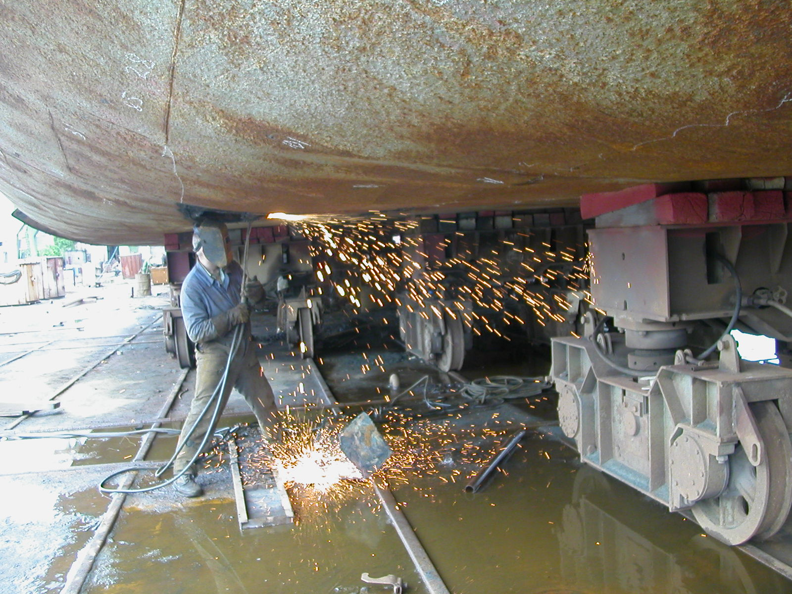

ТОВ "СЛАВУТИЧ"
Чорноморська багатогалузева судноплавна компания

Про компанію
Компанія «Славутич» була заснована в 1999 році і виконує роботи в різних секторах морської галузі.
Досвід роботи наших співробітників і матеріально-технічна база компанії забезпечує успішне виконання поставлених завдань не тільки в Україні, а й на території зарубіжних портів і в морі під час рейсів.
Офіс компанії розташований в безпосередній близькості від СМАРТ-МЕРИТАЙМ ГРУП, до складу якої входять: Херсонський суднобудівний завод, Херсонський суднобудівний-судноремонтний завод (ХССРЗ) ім. Комінтерну і Херсонський судоремонтний завод ім. Куйбишева (ШІПЯРД1930). Співробітники компанії постійно працюють з судами, які ремонтуються на цих заводах. Також компанія регулярно співпрацює з філіями Класифікаційних товариств в м.Херсоні: RS, SRU, INSB, PHOENIX. В результаті тривалої роботи склалися тісні професійні стосунки зі представниками цих підприємств на всіх рівнях. Це дозволяє вирішувати питання і проблеми, пов'язані з ремонтними роботами на суднах, своєчасно і в найкоротші терміни.
Основні напрямки робіт нашої компанії:
✓ Дефектация корпусів суден, заміри залишкових товщин корпусних конструкцій, металоконструкцій суднових пристроїв, трубопроводів, стінок судин і т.i.
✓ Судноремонтнi роботи: корпусно-зварювальні роботи, ремонт і оновлення конструкцій корпусу судна.
✓ Проектно-конструкторські розробки, оформлення суднових документів.
Досвід роботи наших співробітників і матеріально-технічна база компанії забезпечує успішне виконання поставлених завдань не тільки в Україні, а й на території зарубіжних портів і в морі під час рейсів.
Офіс компанії розташований в безпосередній близькості від СМАРТ-МЕРИТАЙМ ГРУП, до складу якої входять: Херсонський суднобудівний завод, Херсонський суднобудівний-судноремонтний завод (ХССРЗ) ім. Комінтерну і Херсонський судоремонтний завод ім. Куйбишева (ШІПЯРД1930). Співробітники компанії постійно працюють з судами, які ремонтуються на цих заводах. Також компанія регулярно співпрацює з філіями Класифікаційних товариств в м.Херсоні: RS, SRU, INSB, PHOENIX. В результаті тривалої роботи склалися тісні професійні стосунки зі представниками цих підприємств на всіх рівнях. Це дозволяє вирішувати питання і проблеми, пов'язані з ремонтними роботами на суднах, своєчасно і в найкоротші терміни.
Основні напрямки робіт нашої компанії:
✓ Дефектация корпусів суден, заміри залишкових товщин корпусних конструкцій, металоконструкцій суднових пристроїв, трубопроводів, стінок судин і т.i.
✓ Судноремонтнi роботи: корпусно-зварювальні роботи, ремонт і оновлення конструкцій корпусу судна.
✓ Проектно-конструкторські розробки, оформлення суднових документів.
Представництва компанії знаходяться в Херсоні, Одесі та Маріуполі.
Послуги
1. виміри залишкових товщин конструкцій судна.
Наша компанія виконує роботи по дефектації корпусів суден з виконанням вимірів залишкових товщин.
Співробітники компанії, що виконують дефектацію, сертифіковані для роботи на суднах різних типів, як на судноремонтних верфях, так і під час рейсів, виконуючи передремонтну дефектацію і готуючи судно до ремонту на верфі.
Компанія сертифікована класифікаційними товариствами на право виконання вимірів залишкових товщини.
Заміри товщини виконуються за допомогою ультразвукових приладів, які зберігають лакофарбове покриття конструкцій. За результатами дефектації оформляються технологічні вказівки для ремонту, з описом параметрів ремонтованих ділянок, включаючи вагові характеристики. При цьому використовуються економічні та технологічні методи ремонту, враховуються як вимоги Регістру, так і побажання судновласника.
За результатами вимірів залишкових товщин оформляється «Звіт про виміри залишкових товщин» в обсязі вимог класу. «Звіт» передається судновласникові для ознайомлення і узгоджується з інспектором класу.
У процесі ремонту судна наші співробітники виконують технологічний супровід і контроль за виконанням ремонтних робіт, оперативно вирішуючи виникаючі питання з представниками судноверфі і Регістром.
Компанія виконує роботи, пов'язані з визначенням технічного стану судна:
- експертна оцінка технічного стану корпусу судна за заявкою судновласника, що включає фотозвіт;
- обстеження судна в результаті аварійних пошкоджень та розробки рекомендацій по ремонту;
- передпродажний огляд судна за заявкою компанії-покупця.


2. виконання корпусно-зварювальних ремонтних робіт.
✓Організація ремонтних бригад для виконання ремонту конструкцій судна під час рейсів.
✓Виконання ремонту конструкцій в портах в результаті аварійних пошкоджень.
✓Виконання ремонтних робіт на суднобудівних.
✓Виготовлення та монтаж установок по обробці баластних вод.
✓Зварювальні роботи. Зварювальники нашої компанії мають сертифікати класифікаційних товариств, що відповідають міжнародним стандартам, а також стаж роботи в судноремонті від 10 до 20 років.
- 
-

-

3. Проектно-конструкторські роботи.
Досвідчені конструктори компанії розробляють великий обсяг конструкторської документації, перелік якої наведено нижче:
✓Розрахунок надводного борту;
✓Оцінка варіантів збільшення вантажопідйомності судна;
✓Розрахунок остійності;
✓Розрахунок аварійної остійності;
✓Інформація про маневрені характеристики судна;
✓Кренування судна;
✓Розрахунок міцності корпусу;
✓Розрахунок остійності при перевезенні зерна;
✓Інструкція по завантаженню;
✓Буклет аварійного буксирування;
✓Інструкція капітану буксира з буксирування;
✓Обгрунтування перегону поза дозволеним районом плавання;
✓Градуйовані таблиці цистерн баласту і запасу;
✓Аналіз відповідності судна вимогам, що пред'являються при перевезенні небезпечних вантажів морем відповідно до кодексу ММОГ і речовин небезпечних навалом (ГЕТЬ) згідно кодексу ВС;
✓Інструкція з технічного обслуговування рятувальних засобів (Згідно Конвенція СОЛАС 74, Правило 36, розділ V, Глава III, частина В);
✓Інструкція по залишенню судна і суднові посібники з підготовки (Згідно Конвенція СОЛАС 74, Правило 35, розділ V, Глава III, частина В);
✓Судновий план операцій зі сміттям (Згідно Конвенція МАРПОЛ 73/78, Програми. V, Прав. 9 і Резолюція Мерс 65 (37), від 14.09.95.);
✓Журнал операцій зі сміттям;
✓План охорони судна (згідно Міжнародного кодексу з охорони суден і портових споруд (Кодекс ОСПЗ; Резолюція 2 прийнята 12.12.2002 р));
✓Звіт про проведення оцінки охорони (згідно Міжнародного кодексу з охорони суден і портових споруд (Кодекс ОСПЗ; Резолюція 2 прийнята 12 грудня 2002 года));
✓Оцінка охорони судна (згідно Міжнародного кодексу з охорони суден і портових споруд (Кодекс ОСПЗ; Резолюція 2 прийнята 12 грудня 2002 года));
✓Судновий журнал видачі ключів;
✓Журнал відвідувань судна;
✓Журнал огляду судна;
✓SOPEP (частина 1) - Судновий план надзвичайних заходів по боротьбі із забрудненням нафтою (Складено )відповідно до вимог Правила 26 Додатка I до МАРПОЛ73 / 78, Резолюції MEPC.54 (32) від 26.03.1992 та Резолюції MEPC.86 (44) від 13.03.2000);
✓SOPEP (частина 2) - Судновий план надзвичайних заходів по боротьбі із забрудненням нафтою (пункти зв'язку);
✓Повчання по підготовці персоналу і буклет експлуатаційного характеру щодо заходів протипожежної безпеки (відповідно до Правил 14, 15, 16 частини Е глави II-2 MK СОЛАС-74 з поправками 2000 року (Резолюція MSC.99 (73));
✓План технічного обслуговування, ремонту і перевірки протипожежних систем і засобів (згідно Правил 14, 15, 16 частини Е глави II-2 MK СОЛАС-74 з поправками 2000 року (Резолюція MSC.99 (73));
✓Перевірка міцності слушних речей і обладнання палуби в носовій частині (відповідно до вимог МАКО S27).
Сертифікація
Компания "Славутич" має визнання по замірюванню товщин таких Класифікаційних товариств як SRU, MSR.
Компанія має сертифікат системи якості ISO 9001:2015.


Контакти
Телефони
Директор Біленко Юрій Леонідович +38 (050) 396-66-91
Технічний директор Суворов Анатолій Іванович +38 (066) 571-53-48
Головний офіс в Херсонi +38 (050) 396-66-91
Відділення в Одесі +38 (050) 560-12-00
Відділення в Маріуполі +38 (050) 600-28-97
+38 (098) 383-90-68
Електронна адреса
e-mail: slavutich_99@yahoo.com
slavutich.od@gmail.com
Адреса головного офісу
73000, Херсонська обл., місто Херсон, Карантинний Острів, будинок 1.